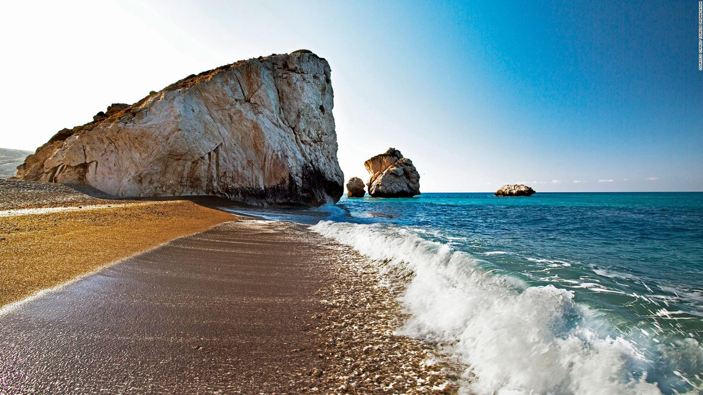
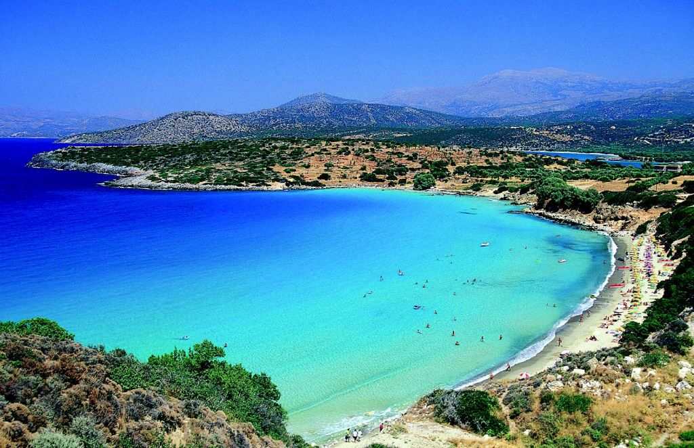
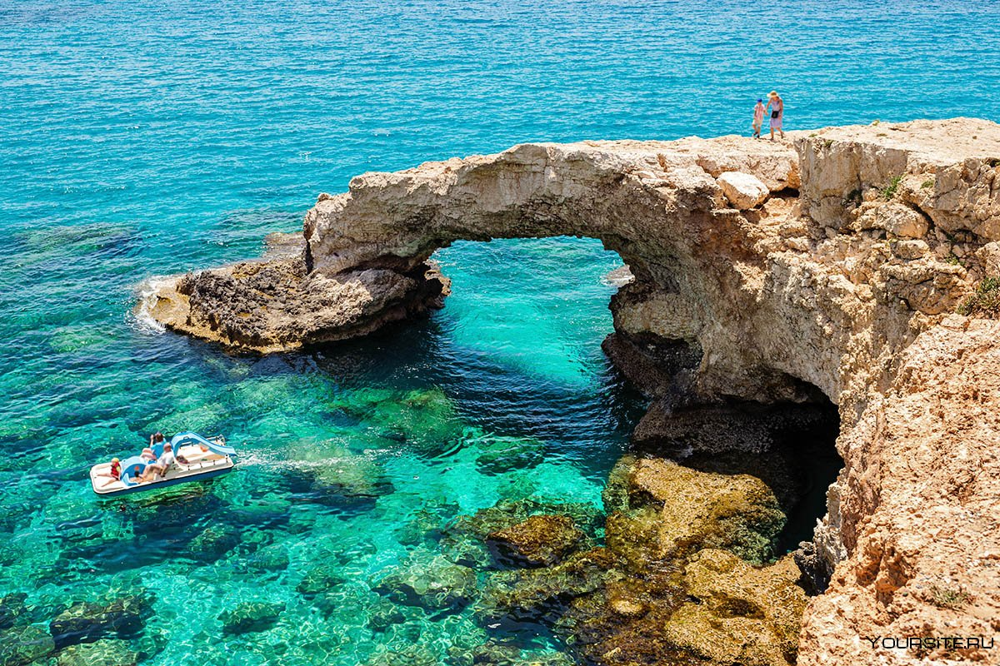

Общие сведения
Официальное название:
Республика Кипр
Столица:
Никосия
Климат:
Климат Кипра - средиземноморский умеренный, с сухим жарким летом и довольно теплой зимой.
Язык:
На Кипре два официальных языка - греческий и турецкий.
Валюта:
Валюта Кипра - евро.
Галерея



Что посмотреть
- Древний город Курион
- Крепость города Пафос
- Бухта Афродиты
- Пляж Нисси
- «Город-призрак» Вароша
- Замок Святого Иллариона
Больше информации о Кипре